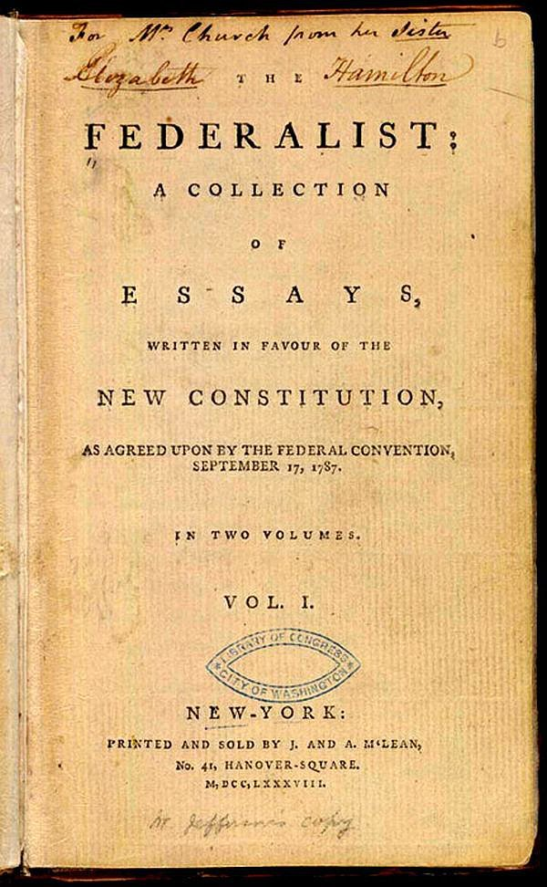

Optima Academy Online
An Education Experience Company
M/J CIVICS
Quarter / Module
Q2 · Module 3
Constitutional Structure
Primary Source
Week 10 · Source 2
Author & Work
Alexander Hamilton, Federalist No. 73
Pairs With
Lesson 10.2 · Primary Source Exercise 10 (Canvas, Tier 2)
Primary Source 2
Hamilton, Federalist No. 73 (1788)
Read this, then complete Primary Source Exercise 10 in Canvas.
📖 CONTEXT
Hamilton wrote this essay to defend the veto to a skeptical public during ratification. Read it alongside Lesson 10.2's account of the veto's two purposes before completing Primary Source Exercise 10.

📜 THE TEXT
“The primary inducement to conferring the power in question upon the Executive is, to enable him to defend himself; the secondary one is to increase the chances in favor of the community against the passing of bad laws, through haste, inadvertence, or design. The oftener a measure is brought under examination, the greater the diversity in the situations of those who are to examine it, the less must be the danger of those errors which flow from a want of due deliberation… It is far less probable that culpable views of any kind should infect all the parts of the government at the same moment and in relation to the same object, than that they should by turns govern and mislead every one of them. It establishes a salutary check upon the legislative body, calculated to guard the community against the effects of faction, precipitancy, or of any impulse unfriendly to the public good, which may happen to influence a majority of that body.”
(Condensed, standard public-domain text.)
➡️ WHAT YOU'LL DO NEXT
1
Primary Source Exercise 10 (Canvas, Tier 2)
Answer directly in the Canvas text box. Quote at least once from the excerpt above before answering the two questions in Canvas.
Optima Academy Online · M/J CIVICS · Quarter 2 · Primary Source Page
Week 10 · Hamilton, Federalist No. 73
© Optima Academy Online · An Education Experience Company